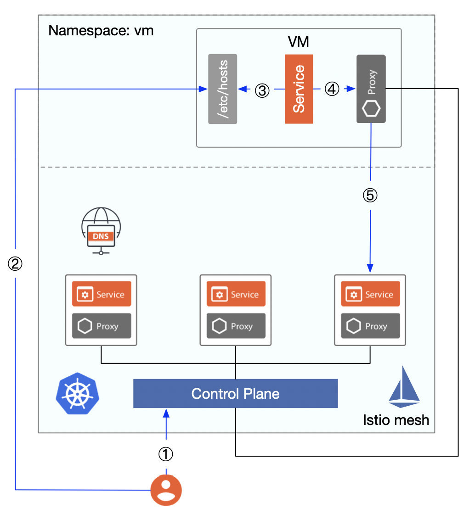
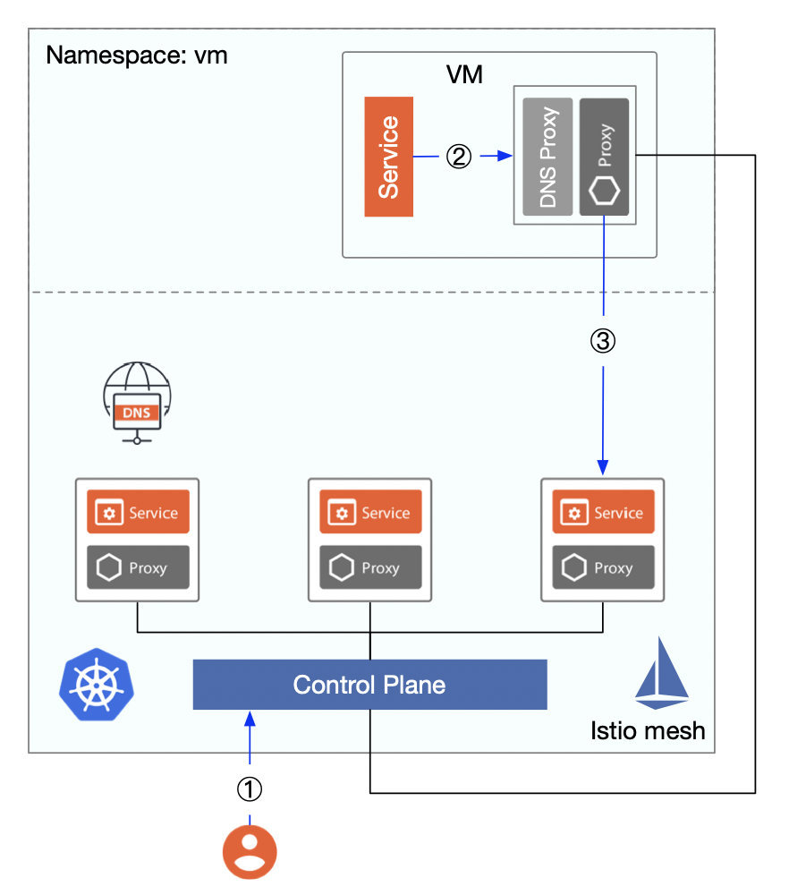

In this article, I’ll give you an overview of Istio‘s history of virtual machine integration support. In particular, the introduction of the smart DNS proxy and WorkloadGroup in Istio 1.8, which makes virtual machines and containers equivalent at the resource abstraction level.
I will show you a tumultuous odyssey of Istio’s virtual machine integration. Tetrate, the enterprise service mesh company that made pushing Istio to run everywhere part of its founding mission, has used VM features extensively in customer deployments and has been instrumental in pushing VMs to Istio upstream.
In my previous article, I talked about how Istio 1.7 supported virtual machines. But at that time, late October, virtual machines were still not seamlessly integrated into Istio — there was still a lot of manual work required. Now, Istio 1.8 has added WorkloadGroup and smart DNS proxy, which allows non-Kubernetes workloads like VMs to become first-class citizens in Istio — just like pods.
With or without a sidecar installed for virtual machines, until 1.7 you could not resolve the DNS name of a Kubernetes service unless a kube-external DNS was configured — which is the last piece of virtual machine integration in Istio. This shortcoming has finally been fixed in Istio 1.8.
In the process of migrating our applications to cloud native architectures and continuously containerizing them, we will go through three phases as shown in the figure below.

The above diagram is artificially simplified: in reality, there might be multiple hybrid clouds, multiple regions, multiple clusters, etc. Plus, at stage 3 containers and virtual machines may remain in long-term coexistence, but the trend of containerization remains unchanged.
Istio’s support for virtual machines is a long process, an odyssey of sorts.
As of version 0.2, Istio added virtual machines to the Mesh via Istio Mesh Expansion, provided that the following prerequisites were met.
The steps to integrate a virtual machine are as follows.
The following figure shows the detailed flow from integrating a virtual machine to accessing services in the virtual machine in a mesh.

Figure 1
productpage.bookinfo.svc.cluster.local, noting that the IP address is not directly accessible, but failure to be DNS resolved will result in a failed VM request for the service.mysql.vm.svc.cluster.local).The above Istio support for virtual machines continued with Istio 1.0, which introduced a new API ServiceEntry with Istio 1.1, that allows additional entries to be added to Istio’s internal service registry so that services in the mesh can access/route to these manually specified services. The istioctl register command is no longer needed and will be deprecated in Istio 1.9.
The istioctl experimental add-to-mesh command has been added to Istio 1.5 to add services from a virtual machine to a mesh, and it works just like the istioctl register.
Istio introduced a new resource type, WorkloadEntry, in traffic management from version 1.6, to abstract virtual machines so that they can be added to the mesh as equivalent loads to the pods in Kubernetes; with traffic management, security management, observability, etc. The mesh configuration process for virtual machines is simplified with WorkloadEntry, which selects multiple workload entries and Kubernetes pods based on the label selector specified in the service entry.
Istio 1.8 adds a resource object for WorkloadGroup that provides a specification that can include both virtual machines and Kubernetes workloads, designed to mimic the existing sidecar injection and deployment specification model for Kubernetes workloads to bootstrap Istio agents on the VMs.
Below is a comparison of resource abstraction levels for virtual machines versus workloads in Kubernetes.
| Item | Kubernetes | Virtual Machine |
|---|---|---|
| Basic schedule unit | Pod | WorkloadEntry |
| Component | Deployment | WorkloadGroup |
| Service register and discovery | Service | ServiceEntry |
From the above diagram, we can see that for virtual machine workloads there is a one-to-one correspondence with the workloads in Kubernetes.
Everything seems perfect at this point. However, exposing the DNS server in the Kubernetes cluster directly is a big security risk, so we usually manually write the domain name and Cluster IP pair of the service the virtual machine needs to access to the local /etc/hosts — but this is not practical for a distributed cluster with a large number of nodes.
The process of accessing the services inside mesh by configuring the local /etc/hosts of the virtual machine is shown in the following figure.

Figure 2
In Kubernetes, we generally use the Service object for service registration and discovery; each service has a separate DNS name that allows applications to call each other by using the service name. We can use ServiceEntry to register a service in a virtual machine into Istio’s service registry, but a virtual machine cannot access a DNS server in a Kubernetes cluster to get the Cluster IP if the DNS server is not exposed externally to the mesh, which causes the virtual machine to fail to access the services in the mesh. Wouldn’t the problem be solved if we could add a sidecar to the virtual machine that would transparently intercept DNS requests and get the Cluster IP of all services in the mesh, similar to the role of dnsmasq in Figure 1?
With the introduction of smart DNS proxy in Istio 1.8, virtual machines can access services within the mesh without the need to configure /etc/hosts, as shown in the following figure.

Figure 3
The Istio agent on the sidecar will come with a cached DNS proxy dynamically programmed by Istiod. DNS queries from the application are transparently intercepted and served by the Istio proxy in the pod or VM, with the response to DNS query requests, enabling seamless access from the virtual machine to the service mesh.
The WorkloadGroup and smart DNS proxy introduced in Istio 1.8 provide powerful support for virtual machine workloads, making legacy applications deployed in virtual machines fully equivalent to pods in Kubernetes.
In this odyssey of Istio’s virtual machine support, we can see the gradual realization of unified management of virtual machines and pods — starting with exposing the DNS server in the mesh and setting up dnsmasq in the virtual machine, and ending with using smart DNS proxies and abstracting resources such as WorkloadEntry, WorkloadGroup and ServiceEntry. This article only focuses on the single cluster situation, which is not enough to be used in real production. We also need to deal with security, multicluster, multitenancy, etc.